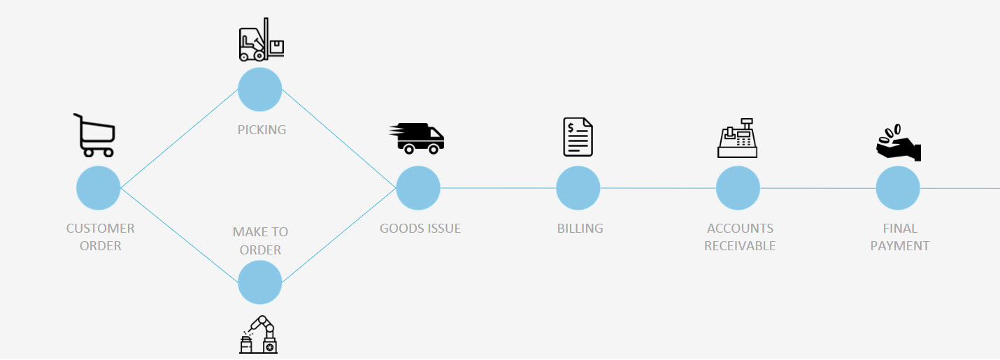
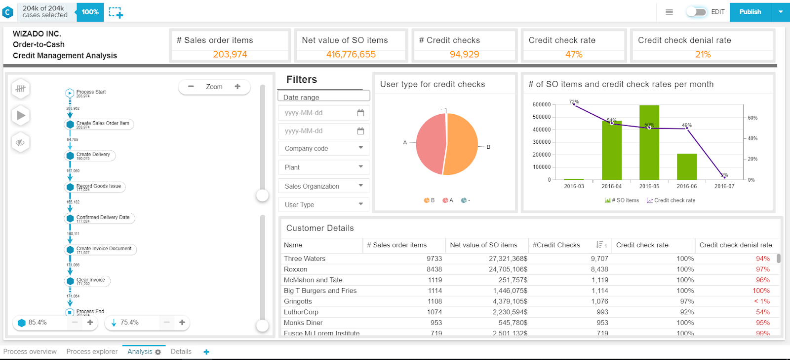

O2C Process Dashboard
I designed and developed this dashboard as part of the Celonis Order-To-Cash (O2C) Challenge. O2C refers to the
business processes behind the fulfillment of a customer order end to end. It pertains to B2B as well as to B2C sales.
A fast and reliable O2C process is crucial to ensure customer satisfaction and revenue.

In this challenge, I used the Celonis process mining tool to deeply analyse O2C credit management data and create an interative dashboard
according to stakeholder requirements. The dataset contained 204k customer cases.
Analysis goal
Reduce throughput time for credit checks and minimize the amount of bad debt expenses.
Dashboard
Celonis is a propietary tool so I am unable to share the data. Here is a screenshot of the finalized dashboard.

Business Impact
The new analysis offered by the dashboard is interesting from a business perspective because it provides
clear visibility into customers who are taking up valuable credit check processing time by providing clear insights into top offenders
in terms of credit denial rate, number of credit checks, and user type. The column chart in this analysis compares the number of sales
orders relative to the number of credit checks performed each month. A quick look at this chart reveals that March has the highest
credit check rate (72%) but the second lowest number of sales order items. Such insights will enable the company’s managers to
make informed decisions regarding needed process improvements that could potentially reduce credit checks throughput times, and
make recommendations to the management on certain customer relationships, contracts etc.